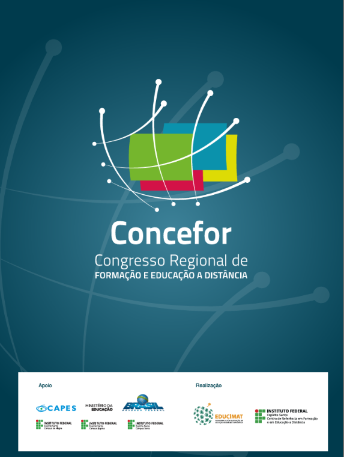
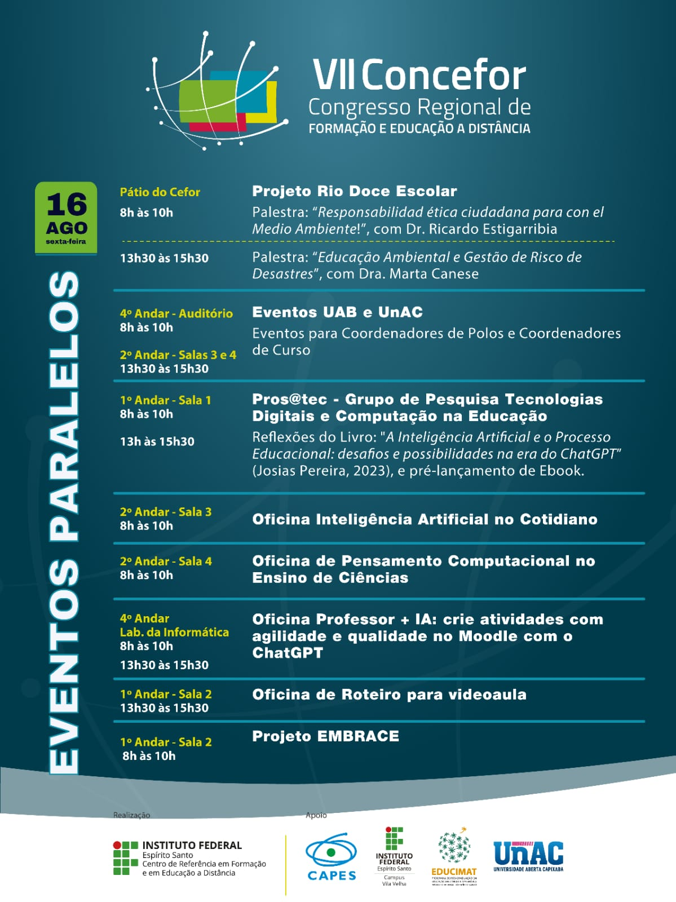

Os 13 banners do congresso: o que é cada um, o conteúdo pronto para copiar, prazos, referências e o que ainda falta chegar. Produção: Andreia.
Produzir 13 banners: os 10 do evento, contratados no Termo de Referência 72/2026 e impressos pela gráfica junto com o resto do material, mais 3 institucionais — livro dos 20 anos, Base de Conhecimentos e plataforma de MOOCs — pedidos pela Vanessa Battestin e custeados pela UAB.
| Situação | Quais | Quantos |
|---|---|---|
| Pode produzir já | #01 · #07 a #10 (uma arte só) · #11 | 6 banners · 3 artes |
| Conteúdo pronto, falta o local | #02 · #03 · #04 · #05 | 4 · 5 lacunas |
| Aguardando informação | #06 (eventos paralelos) · #12 · #13 | 3 |
Todo o material vive no Google Drive. Não é preciso acessar mais nada além destas duas pastas — a primeira é onde você trabalha e salva, a segunda é de onde vêm as referências.
É aqui que você trabalha. Salve nesta pasta os arquivos editáveis e as artes finais dos banners. Os arquivos de marca (logos e selo dos 20 anos) também ficam aqui.
Abrir pasta de trabalho ↗Pasta principal de referência. Todos os banners da edição passada — geral, eventos paralelos, entrada e sinalização. Use como estrutura e hierarquia de informação, não como cópia: marca, tema e selo mudam este ano.
Abrir referências 2024 ↗Duas peças desta edição já estão finalizadas e aprovadas — e é delas que sai o padrão. Use como referência de aplicação da logo e dos elementos gráficos: proporção, cor, distância entre marca e grafismo, tratamento do selo. Os banners devem conversar com elas.
| Quando | O quê |
|---|---|
| 31/07 | Banners do Concefor — #01 a #10. É o prazo que vale para os dez do evento |
| 01/08 | #11 livro dos 20 anos e #12 Base de Conhecimentos — a Vanessa volta das férias no começo de agosto e leva à gráfica |
| 03/08 | #13 vitrine de MOOCs |
| 07/08 | Prazo-limite contratado de entrega do material impresso no Cefor |
| 17/08 | Abertura do VIII Concefor. Os banners precisam estar montados antes |
| Item | Especificação |
|---|---|
| Medida | 0,90 × 1,20 m (vertical) — medida contratada no TR, não é estimativa. Vale para os 10 banners do evento |
| Cor | Colorido, impressão em lona/banner conforme a gráfica |
| Arquivo | PDF fechado, com marcas de corte e sangria, textos e logos em curvas — foi o que a gráfica pediu para as outras peças |
| Assinaturas | Realização: Cefor. Apoio: Ifes Campus Vila Velha e Educimat. São as únicas logos que teremos — não há outras marcas de apoio nesta edição |
O número com # é o identificador de cada banner — use ele para nomear arquivos e falar da peça. A ordem é a de produção.
| ID | Banner | Situação | |
|---|---|---|---|
| Banners do evento 10 unidades · 0,90 × 1,20 m · prazo 31/07 | |||
| #01 | Concefor Geral Identidade do evento: marca, tema e selo dos 20 anos | pode produzir | |
| #02 | Dia 17/08 — segunda · Abertura Programação do dia · 8 linhas | 1 confirmação | |
| #03 | Dia 18/08 — terça Programação do dia · 6 linhas | 3 lacunas | |
| #04 | Dia 19/08 — quarta Programação do dia · 7 linhas | 2 lacunas | |
| #05 | Dia 20/08 — quinta · Encerramento Programação do dia · 5 linhas | confirmar o dia | |
| #06 | Eventos paralelos — 20/08 Todos os eventos do dia, com local e horário · último a imprimir | esperando locais | |
| #07 a #10 |
Locais do Cefor — uma arte só, 4 impressões Os quatro são exatamente iguais: mesmo arquivo, uma cópia pendurada em cada andar. Lista os locais do prédio · peça permanente | pode produzir | |
| Banners institucionais 3 unidades · fora do TR · custeados pela UAB · arte única para os três | |||
| #11 | Livro dos 20 anos do Cefor Capa do livro + QR code · prazo 01/08 | pode começar | |
| #12 | Base de Conhecimentos Plataforma no ar + QR code · prazo 01/08 | link ✅, arte a fazer | |
| #13 | Vitrine de MOOCs Nova plataforma de cursos + QR code · prazo 03/08 | falta o link | |
O que está dentro da caixa cinza é o conteúdo da peça — dá para copiar com um clique. O que está fora da caixa é orientação de produção. Legenda dos locais: verde confirmado · laranja a confirmar · vermelho ainda vai chegar.
O banner de identidade do evento. Modelo: o banner geral de 2024, na pasta de referências — marca grande e centralizada sobre o fundo azul-petróleo com o grafismo de linhas e nós, rodapé com Realização e Apoio.
Layout dos banners de dia: etiqueta de data no topo, horário e local à esquerda, atividade à direita — como no banner de eventos paralelos de 2024. ⚠️ O item oficial "Eventos UAB / UnAC / NTE" vira duas linhas, porque os locais são diferentes. Confirmar antes de fechar.
💡 Se faltar espaço, as duas Mostras podem virar uma linha só ("8h e 11h30"), já que compartilham o local.
O dia mais cheio — 7 linhas. As duas lacunas são do mesmo item (sessões técnicas): uma resposta fecha o banner inteiro.
⚠️ Falta confirmar se este banner é mesmo do dia 20 — a lista da
coordenação repete "18/08". O conteúdo aqui assume 20/08, o único dia sem banner próprio.
📌 Não repita aqui a lista dos eventos paralelos: ela é o conteúdo inteiro do
#06. Uma chamada basta.
Mesmo layout dos banners de dia. É o último a imprimir: espera a programação da Aula Inaugural do Educimat. Os locais em vermelho ainda estão sendo definidos pelas coordenações.
É peça permanente: fica no prédio depois do evento. Por isso vai sem a logo do Concefor e sem o selo dos 20 anos — o selo é comemorativo e deixaria a peça datada. Só entra a assinatura do Cefor / Ifes.
A capa do livro já está pronta — é a imagem da peça, e por isso este banner pode entrar já no primeiro lote. ⚠️ O link que existe hoje é provisório: pegar o definitivo com a Vanessa antes de gerar o QR code. Prazo 01/08.
A plataforma já está no ar, então a imagem pode sair de um print da própria home: conhecimento.cefor.ifes.edu.br ↗. O site é em preto e branco — vale checar se a peça puxa a identidade dele ou a do Cefor. Prazo 01/08.
https://conhecimento.cefor.ifes.edu.br/Nova vitrine dos cursos abertos do Cefor. O endereço ainda não foi informado — sem ele não há QR code nem print para a imagem. É a única trava desta peça, e está sendo cobrado. Prazo 03/08.
Os dois modelos que mais importam, da edição de 2024. Os arquivos completos estão na pasta de referências no Drive.


| Para que | Onde |
|---|---|
| #12 · Base de Conhecimentos — print e QR code | conhecimento.cefor.ifes.edu.br ↗ |
| Selo dos 20 anos — manual de identidade visual | PDF oficial ↗ |
| Programação e informações do evento | Site do VIII Concefor ↗ |
cgte.cefor@ifes.edu.br — decisão que só existe em WhatsApp não fica rastreável
e a coordenação não acompanha.Nada disso é trabalho seu — é informação que já está sendo cobrada. A lista existe para você saber o que esperar e de quem, e para não parar a produção por causa delas.
| O que falta | Com quem | Destrava |
|---|---|---|
| Local das sessões técnicas (18/08 tarde, 19/08 manhã e tarde) | Viviane — Coordenação Geral | #04 inteiro e metade do #03 |
| Local da Mostra de Produtos e Produções Técnicas (18/08) | Viviane | #03, junto com o de cima |
| Confirmar UAB/UnAC no Pátio e NTE no Auditório | Viviane | #02 |
| Confirmar se o #05 é do dia 20/08 (a lista repete 18/08) | Viviane | #05 |
| Locais dos eventos paralelos — 3 a definir + escolha entre Auditório e Pátio | Coordenação e coordenadores | #06 |
| Programação da Aula Inaugural do Educimat | Educimat | #06 (o último a imprimir) |
| Link definitivo do livro | Vanessa Battestin | QR code do #11 |
| Endereço da nova vitrine de MOOCs | Vanessa Battestin | #13 inteiro |